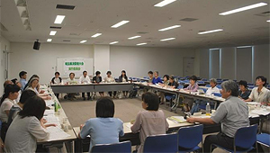

|
|
第51回埼玉県消費者大会実行委員会 6月16日(火)13時30分より、浦和コミュニティセンター第15集会室にて、第3回実行委員会が開催され、32人(21団体)事務局2人が出席しました。 【議題】  1．第2回実行委員会報告 前回からの修正・変更点となる項目について確認しました。 2．第51回大会スローガン 第1回・2回実行委員会、幹事団体の話し合いを受けて、検討した結果、スローガンを次のように確認しました。 「平和で安心してくらせる社会のために 行動する消費者になろう」 3．大会基調報告について。 岩岡事務局長より、基調報告一次案を報告し、意見交換を行いました。意見交換では、食の教育(食育)の大切さ、JA改革などの食をめぐる情勢、食品ロス等について追加が必要ではないかとの意見がありました。次回の実行委員会に向けて2次案にまとめ、継続して検討することになりました。 4．記念講演テーマ・全体会のスケジュールについて
5．全体会の役割分担について
6．分科会について
7．事務局連絡
|